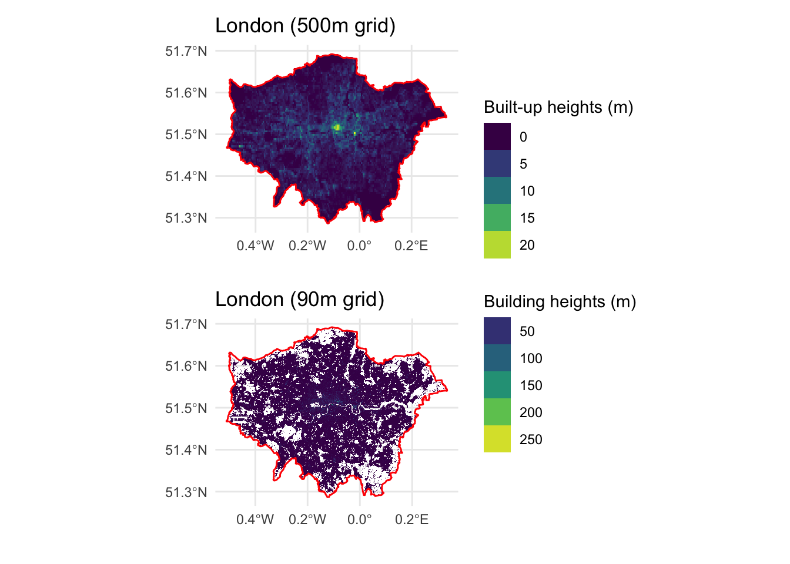
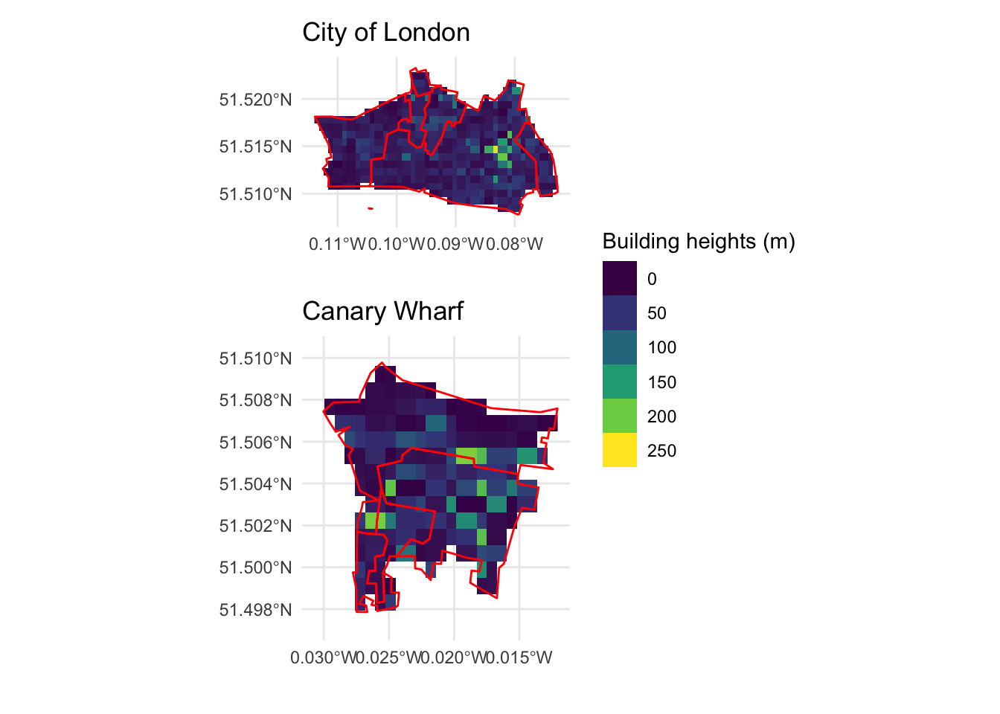

A first look at building heights data
data science
urban
london
buildings
Building heights are an important indicator for various urban analyses - from population / m\(^{2}\) to Floor Area Ratio (FAR). However, getting this data is not easy. Building polygons in OpenStreetMap usually don’t have this attribute unless it was part of a bulk upload and only some cities provide open data of building footprints with heights [1]. With time and skill, a digital elevation model from LIDAR data (or other sources of data) can be used to derive building heights.
None of these options are useful for a relative beginner in remote sensing interested in exploring urbanism of the Global South. Enter derived open data from academic papers. Here I look two datasets - average building heights in a 500m grid from [2] and 90m grid from [3]. Both datasets are cropped to the London polygon for further analysis.
The supplementary information in [2] provides a Figshare link to download a global dataset of average building heights in a 500 m\(^{2}\) grid area. The centre of London and the Canary Wharf areas show heights of 20m - which are considerably lower than the heights of actual buildings (100 - 300m), While this dataset is not useful for analysis pertaining to buildings, it is useful for comparing built-up volumes derived from the average built-up heights as done in the paper. The data could also be useful for demarcating areas with higher proportions of tall buildings vs. medium height vs. single family homes.
A recent paper by Esch et al. [3] described a methdology for deriving building heights for the established World Settlement Footprints data suite [4]. The higher granularity of this dataset, 90 m\(^{2}\), brings grid average heights much closer to real world building heights. However, the visual patterns of urbanisation at a city scale are lost.
We need to zoom in to borough or MSOA (Middle Super Output Area) to better visualise areas with tall buildings. In City of London, we easily see higher granularity of the cluster around Liverpool Street that contains the Shard, the tallest building in London. Similarly, the zoom over the Canary Wharf business cluster shows the spread of areas with many tall buildings over 100m (list here). The value of the grid cell is pretty close to the building heights though not exact as it is still an average and likely that the grid cell doesn’t always overlap fully with the building footprint of a tall building.

References
[1]
“NYC Building Heights.” https://data.cityofnewyork.us/Housing-Development/Building-Heights/pffy-49n3 (accessed Mar. 18, 2023).
[2]
Y. Zhou et al., “Satellite mapping of urban built-up heights reveals extreme infrastructure gaps and inequalities in the Global South,” Proc. Natl. Acad. Sci. U.S.A., vol. 119, no. 46, p. e2214813119, Nov. 2022, doi: 10.1073/pnas.2214813119.
[3]
T. Esch et al., “World Settlement Footprint 3D - A first three-dimensional survey of the global building stock,” Remote Sensing of Environment, vol. 270, p. 112877, Mar. 2022, doi: 10.1016/j.rse.2021.112877.
[4]
M. Marconcini, A. Metz- Marconcini, T. Esch, and N. Gorelick, “Understanding Current Trends in Global Urbanisation - The World Settlement Footprint Suite,” giforum, vol. 1, pp. 33–38, 2021, doi: 10.1553/giscience2021_01_s33.